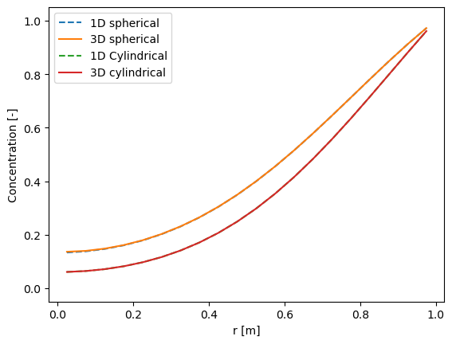
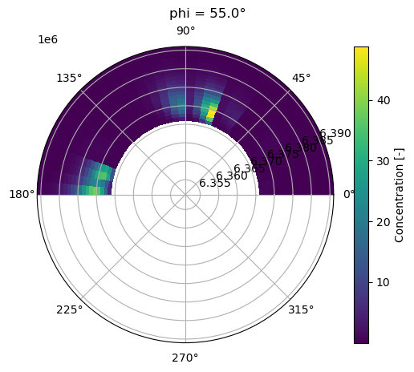
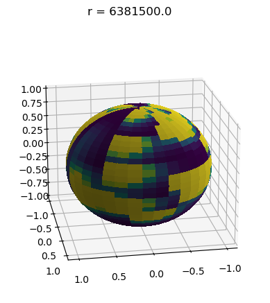
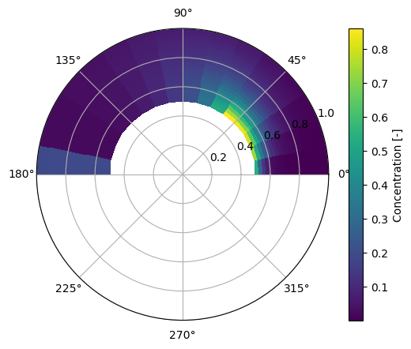
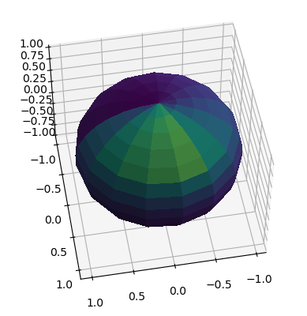

Advection and Diffusion in Spherical Coordinates with PyFVTool¶
In this notebook, we will solve the advection equation in spherical coordinates using the finite volume method. The notebook serves principally for testing the implementation of ‘spherical’ advection and diffusion terms in PyFVTool, but also for illustrating their use.
The notebook contains several examples of advection and diffusion equations, and first attempts at visualizing 3D spherical results (suggestions welcome!).
[1]:
import sys
import os
import numpy as np
import matplotlib.pyplot as plt
from mpl_toolkits.mplot3d import Axes3D
from tqdm import tqdm
[2]:
import pyfvtool as pf
When working with random numbers (numpy.random), set the random seed explicitly. This is good practice. Make sure that you trust your random number generator to be sufficiently random (Numpy’s default is OK). With a fixed value for the initial seed, you are sure to always obtain the same sequence of random numbers from run to run. This makes testing more practical. If you want to have a different sequence of random numbers, manually change the seed, but make sure that you remember which seed
number was used.
[3]:
# Set the random seed explicitly
np.random.seed(seed=12345)
First explorations of the spherical finite volume elements¶
[4]:
X = np.array([0.01, 0.1, 0.3, 0.5, 0.55, 1.0])
Y = np.array([0.0, 0.1, 1.0, 1.5, 2.9, 3.0, np.pi, np.pi])
Z = np.array([0.0, 0.01, 0.1, 0.5, 0.7, 0.95, 1.0, 1.25, 1.39, 2.0])
m_non = pf.SphericalGrid3D(X, Y, Z)
[5]:
# test the volume calculations
x = np.linspace(0.0, 1.0, 10)
y = np.linspace(0.0, 2*np.pi, 10)
z = np.linspace(0.0, 2*np.pi, 20)
mc = pf.CylindricalGrid3D(x, y, z)
vc = mc._getCellVolumes()
v_cyl = np.pi*x[-1]**2*z[-1]
print(v_cyl, np.sum(vc))
mp = pf.PolarGrid2D(x, y)
vp = mp._getCellVolumes()
v_pol = np.pi*x[-1]*x[-1]
print(v_pol, np.sum(vp))
19.739208802178716 19.739208802178716
3.141592653589793 3.1415926535897936
[6]:
x = np.linspace(0.0, 1.0, 5)
y = np.linspace(0.0, np.pi, 10)
z = np.linspace(0.0, 2*np.pi, 10)
ms = pf.SphericalGrid3D(x, y, z)
vs = ms._getCellVolumes()
v_sph = 4/3*np.pi*x[-1]**3
print(v_sph, np.sum(vs))
4.1887902047863905 4.144349016011306
Diffusion equations: spherical and cylindrical coordinates, 1D and 3D¶
Solving a diffusion equation with “no flux” concentration at the “left boundary” (the center) and a fixed concentration on the “right boundary” (the outer surface).
The same equation is solved in spherical and cylindrical coordinates. Both 1D and 3D geometries are used to test consistency.
[7]:
# Calculation parameters
def diffusion_spherical(mesh, t_simulation=7200.0, dt=60.0):
c_left = 1.0 # left boundary concentration
c_init = 0.0 # initial concentration
D_val = 1e-5 # diffusion coefficient (gas phase)
# Create a cell variable with initial concentration
# By default, 'no flux' boundary conditions are applied
c = pf.CellVariable(mesh, c_init)
# Switch the right boundary to Dirichlet: fixed concentration
c.BCs.right.a = 0.0
c.BCs.right.b = 1.0
c.BCs.right.c = c_left
if type(mesh) == pf.SphericalGrid3D:
# make top and bottom boundaries periodic
c.BCs.back.periodic = True
c.BCs.front.periodic = True
# Assign diffusivity to cells
D_cell = pf.CellVariable(mesh, D_val)
D_face = pf.geometricMean(
D_cell
) # average value of diffusivity at the interfaces between cells
# Time loop
t = 0
while t < t_simulation:
# Compose discretized terms for matrix equation
eqnterms = [pf.transientTerm(c, dt, 1.0), -pf.diffusionTerm(D_face)]
# Solve PDE
pf.solvePDE(c, eqnterms)
t += dt
return c
[8]:
# Calculation parameters
Nx = 20 # number of finite volume cells
Ntheta = 6 # number of cells in the theta direction; avoid theta=0 and theta=pi
Nphi = 5 # number of cells in the phi direction
Lx = 1.0 # [m] length of the domain
# Define mesh
mesh1 = pf.SphericalGrid1D(Nx, Lx)
c1 = diffusion_spherical(mesh1)
mesh3 = pf.SphericalGrid3D(Nx, Ntheta, Nphi, Lx, np.pi, 2 * np.pi)
c3 = diffusion_spherical(mesh3)
mesh1_rad = pf.CylindricalGrid1D(Nx, Lx)
c1_rad = diffusion_spherical(mesh1_rad)
mesh3_cyl = pf.CylindricalGrid3D(Nx, Ntheta, Nphi, Lx, 2 * np.pi, 2 * np.pi)
c3_cyl = diffusion_spherical(mesh3_cyl)
[9]:
plt.plot(mesh1.cellcenters.r, c1.value, "--", label="1D spherical")
plt.plot(mesh3.cellcenters.r, c3.value[:, 0, 0], label="3D spherical")
plt.plot(mesh1_rad.cellcenters.r, c1_rad.value, "--", label="1D Cylindrical")
plt.plot(mesh3_cyl.cellcenters.r, c3_cyl.value[:, 0, 0], label="3D cylindrical")
plt.xlabel("r [m]")
plt.ylabel("Concentration [-]")
plt.ylim(-0.05, 1.05)
plt.legend();

Spherical advection in 3D (with visualization)¶
The spherical geometry defined here is that of a layer of a certain thickness at the surface of sphere, e.g. a virtual atmosphere on the surface of a virtual Earth.
[10]:
r_earth = 6.371e6 # Earth radius [m]
v_wind_max = 10.0 # wind speed [m/s]
# ignoring diffusion
Nr = 20 # number of cells in the r direction
Ntheta = 36 # number of cells in the theta direction
Nphi = 36 # number of cells in the phi direction
Lr = 20e3 # [m] length of the domain in the r direction
r_face = np.linspace(r_earth, r_earth + Lr, Nr + 1)
theta_face = np.linspace(0, np.pi, Ntheta + 1)
phi_face = np.linspace(0, 2 * np.pi, Nphi + 1)
[11]:
mesh = pf.SphericalGrid3D(r_face, theta_face, phi_face)
c = pf.CellVariable(mesh, 0.0)
# assign a concentration of 1.0 to 20 random locations
c.value[0, np.random.randint(0, Ntheta, 50), np.random.randint(0, Nphi, 50)] = 1000.0
[12]:
# Set boundary conditions
# left boundary is a fixed concentration
c.BCs.left.a[:] = 0.0
c.BCs.left.b[:] = 1.0
c.BCs.left.c[:] = 0.0
## assign a concentration of 1.0 to a patch of left boundary
# c.BCs.left.c[0:10, 0:10] = 1.0
## right boundary is a fixed concentration
# c.BCs.right.a[:] = 0.0
# c.BCs.right.b[:] = 1.0
# c.BCs.right.c[:] = 0.0
## top and bottom boundaries are periodic
# c.BCs.top.periodic = True
# c.BCs.bottom.periodic = True
c.BCs.back.periodic = True
c.BCs.front.periodic = True
[13]:
# create a constant velocity field
v = pf.FaceVariable(mesh, [0.1, 10, 10])
convectionterm = pf.convectionUpwindTerm(v)
[14]:
# Time loop
t = 0
dt = 10000.0
n_steps = 5
for i in tqdm(range(n_steps), bar_format="{desc}: {percentage:3.0f}% completed"):
eqn = [pf.transientTerm(c, dt, 1.0),
convectionterm]
c = pf.solvePDE(c, eqn)
t += dt
100% completed
[15]:
print(c.value[0, :, :])
[[1.12474992e-06 5.89347319e-07 3.07788221e-07 ... 1.12448870e-05
5.96680735e-06 3.15333897e-06]
[1.46808022e-07 6.96918445e-08 3.42636345e-08 ... 3.24891256e-06
1.23095334e-06 5.05690564e-07]
[1.83629659e-08 8.06864630e-09 3.76258740e-09 ... 5.81033744e-07
1.97060868e-07 7.19942449e-08]
...
[3.98893067e-02 5.35021522e-02 4.33750566e-02 ... 1.05030469e+00
5.38012959e-01 2.08924694e-01]
[1.10233675e+01 1.05738399e+01 7.10617623e+00 ... 2.95071442e-01
1.96481799e-01 1.03522821e-01]
[4.79304997e+00 6.42472561e+00 6.85747726e+00 ... 1.26437721e+00
8.84223832e-01 6.02753851e-01]]
Visualization¶
Meaningful and insightful visualization of 3D spherical and cylindrical FVM results can be quite challenging. It requires thinking carefully on how to best present the features that illustrate the results of your calculations. Of course, it also requires to have right code to make the drawing.
The visualization is part of the ‘post-processing’ of numerical calculations. (BTW, already for relatively simple cases, it is wise to separate the number cruching code from the post-processing, by storing the calculation results in a file. This avoids having to wait over and over again for the same calculation to terminate.)
Here, we show our first suggestions for the graphical output of 3D spherical (and cylindrical) FVM results.
[16]:
# visualize the result: use a polar plot for plotting a 'slice' at a certain value of 'phi'
# (lemon - or mellon - style slice)
# select the 'phi' using its index
iphi = 5
r = mesh.cellcenters.r
theta = mesh.cellcenters.theta
phi = mesh.cellcenters.phi
R, Theta = np.meshgrid(r, theta)
X = R * np.sin(Theta)
Y = R * np.cos(Theta)
Z = c.value[:, :, iphi].transpose()
fig = plt.figure()
phideg = np.rad2deg(phi[iphi])
fig.suptitle(f'phi = {phideg}°')
ax = fig.add_subplot(111, polar=True)
# set the color range between 0 and 1
cax = ax.pcolormesh(Theta, R, Z, cmap="viridis")
fig.colorbar(cax, label="Concentration [-]")
# zoom in to the region of interest
ax.set_ylim([r_earth - Lr, r_earth + Lr])
plt.show()

[17]:
# First version of a 3D plotting routine
# Plot a spherical view of a single layer at height/depth 'r'
# (onion-layer style)
# select r by index
ir = 10 # halfway
data = c.value[ir, :, :]
# Generate theta and phi values
theta = np.linspace(0, np.pi, data.shape[0])
phi = np.linspace(0, 2 * np.pi, data.shape[1])
theta, phi = np.meshgrid(theta, phi)
# Convert spherical coordinates to Cartesian coordinates
x = np.sin(theta) * np.cos(phi)
y = np.sin(theta) * np.sin(phi)
z = np.cos(theta)
# Create a 3D plot
fig = plt.figure()
fig.suptitle(f'r = {mesh.cellcenters.r[ir]}')
ax = fig.add_subplot(111, projection="3d")
# Plot the surface
ax.plot_surface(
x, y, z, facecolors=plt.cm.viridis(data), rstride=1, cstride=1, antialiased=False
)
# rotate the plot
ax.view_init(elev=20, azim=80)
# Show the plot (perhaps interactively when not in Jupyter Lab?)
plt.show()

[18]:
print(c.value.min(), c.value.max())
7.606713348051508e-13 91.582096081292
Advective transport 3D cylindrical example¶
Here, we run a similar simulation of a cylindrical version of Earth, to test 3D cylindrical coordinates.
[19]:
r_earth = 6.371e6 # Earth radius [m]
v_wind_max = 10.0 # wind speed [m/s]
L = r_earth
# ignoring diffusion
Nr = 20 # number of cells in the r direction
Ntheta = 16 # number of cells in the theta direction
Nz = 16 # number of cells in the phi direction
Lr = 20e3 # [m] length of the domain in the r direction
r_face = np.linspace(0, Lr, Nr + 1)
theta_face = np.linspace(0, 2 * np.pi, Ntheta + 1)
L_face = np.linspace(0, L, Nz + 1)
[20]:
mesh = pf.CylindricalGrid3D(r_face, theta_face, L_face)
c = pf.CellVariable(mesh, 0.0)
# assign a concentration of 1.0 to 20 random locations
c.value[0, np.random.randint(0, Ntheta, 20), np.random.randint(0, Nz, 20)] = 1000.0
[21]:
# BC
# top and bottom boundaries are periodic
c.BCs.top.periodic = True
c.BCs.bottom.periodic = True
[22]:
# create a velocity field of random values between 0 and v_wind_max
v = pf.FaceVariable(mesh, [0, 0.001, 0.0])
# v.thetavalue = np.random.rand(Nr, Ntheta+1, Nz) * v_wind_max
# v.thetavalue[:, 0, :] = 0.0 # no wind at the poles
# v.thetavalue[:, -1, :] = 0.0 # no wind at the poles
convectionterm = pf.convectionUpwindTerm(v)
[23]:
# Time loop
t = 0
dt = 100000.0
t_simulation = 1 * dt
while t < t_simulation:
eqn = [pf.transientTerm(c, dt, 1.0),
convectionterm]
c = pf.solvePDE(c, eqn)
t += dt
[24]:
print(c.value[0, :, :])
[[6.69906320e-02 1.53121216e+01 0.00000000e+00 1.53121216e+01
7.97036372e+02 0.00000000e+00 0.00000000e+00 6.69906320e-02
2.57395707e-03 7.97036764e+02 1.98526430e-01 2.93084453e-04
4.55759284e+01 9.01926587e-04 5.16951986e+00 0.00000000e+00]
[2.26052761e-02 5.16691253e+00 0.00000000e+00 5.16691253e+00
2.68951445e+02 0.00000000e+00 0.00000000e+00 2.26052761e-02
8.68554431e-04 2.68951577e+02 6.69906320e-02 9.88982309e-05
1.53791122e+01 6.62560942e+02 6.64305037e+02 0.00000000e+00]
[7.62790995e-03 1.74351967e+00 0.00000000e+00 1.74351967e+00
9.07548039e+01 0.00000000e+00 0.00000000e+00 7.62790995e-03
2.93084453e-04 7.53315487e+02 2.26052761e-02 3.33721559e-05
5.18951781e+00 2.23574142e+02 2.24162668e+02 0.00000000e+00]
[2.57395707e-03 5.88332165e-01 0.00000000e+00 5.88332165e-01
3.06242431e+01 0.00000000e+00 0.00000000e+00 2.57395707e-03
9.88982309e-05 9.16758935e+02 7.62790995e-03 6.62560649e+02
1.75114758e+00 7.54427157e+01 7.56413077e+01 0.00000000e+00]
[8.68554431e-04 1.98526430e-01 0.00000000e+00 1.98526430e-01
1.03338251e+01 0.00000000e+00 0.00000000e+00 8.68554431e-04
3.33721559e-05 3.09350550e+02 2.57395707e-03 2.23574043e+02
5.90906122e-01 6.88017980e+02 2.55243546e+01 0.00000000e+00]
[2.93084453e-04 6.69906320e-02 0.00000000e+00 6.69906320e-02
3.48703934e+00 0.00000000e+00 0.00000000e+00 2.93084453e-04
6.62560649e+02 1.04387052e+02 8.68554431e-04 7.54426824e+01
1.99394985e-01 2.32164348e+02 6.71173560e+02 0.00000000e+00]
[9.88982309e-05 2.26052761e-02 0.00000000e+00 2.26052761e-02
1.17666433e+00 0.00000000e+00 0.00000000e+00 9.88982309e-05
2.23574043e+02 3.52243003e+01 2.93084453e-04 2.54573306e+01
6.72837165e-02 7.83413895e+01 2.26480378e+02 0.00000000e+00]
[3.33721559e-05 7.62790995e-03 0.00000000e+00 7.62790995e-03
3.97052861e-01 0.00000000e+00 0.00000000e+00 3.33721559e-05
7.54426824e+01 1.18860654e+01 9.88982309e-05 8.59030540e+00
2.27041744e-02 2.64354685e+01 7.64233942e+01 0.00000000e+00]
[6.62560649e+02 2.57395707e-03 0.00000000e+00 2.57395707e-03
1.33981264e-01 0.00000000e+00 0.00000000e+00 6.62560649e+02
2.54573306e+01 4.01082634e+00 3.33721559e-05 2.89870717e+00
7.66128211e-03 8.92036763e+00 2.57882614e+01 0.00000000e+00]
[2.23574043e+02 8.68554431e-04 0.00000000e+00 8.68554431e-04
4.52105522e-02 0.00000000e+00 0.00000000e+00 2.23574043e+02
8.59030540e+00 1.35341068e+00 6.62560649e+02 9.78137899e-01
6.62563223e+02 3.01008316e+00 8.70197447e+00 0.00000000e+00]
[7.54426824e+01 2.93084453e-04 0.00000000e+00 2.93084453e-04
1.52558199e-02 0.00000000e+00 0.00000000e+00 7.54426824e+01
2.89870717e+00 4.56694036e-01 2.23574043e+02 3.30062229e-01
2.23574911e+02 1.01572054e+00 2.93638871e+00 0.00000000e+00]
[2.54573306e+01 9.88982309e-05 0.00000000e+00 9.88982309e-05
5.14791414e-03 0.00000000e+00 0.00000000e+00 2.54573306e+01
9.78137899e-01 1.54106544e-01 7.54426824e+01 1.11375988e-01
7.54429754e+01 3.42744092e-01 9.90853134e-01 0.00000000e+00]
[8.59030540e+00 3.33721559e-05 0.00000000e+00 3.33721559e-05
1.73710886e-03 0.00000000e+00 0.00000000e+00 8.59030540e+00
3.30062229e-01 5.20016140e-02 2.54573306e+01 3.75826423e-02
2.54574295e+01 1.15655348e-01 6.62894991e+02 0.00000000e+00]
[2.89870717e+00 6.62560649e+02 0.00000000e+00 6.62560649e+02
5.86168906e-04 0.00000000e+00 0.00000000e+00 2.89870717e+00
1.11375988e-01 1.75473914e-02 8.59030540e+00 1.26818628e-02
8.59033877e+00 3.90266667e-02 2.23686863e+02 0.00000000e+00]
[9.78137899e-01 2.23574043e+02 0.00000000e+00 2.23574043e+02
1.97796462e-04 0.00000000e+00 0.00000000e+00 9.78137899e-01
3.75826423e-02 5.92118058e-03 2.89870717e+00 4.27935971e-03
6.65459356e+02 1.31691335e-02 7.54807523e+01 0.00000000e+00]
[3.30062229e-01 7.54426824e+01 0.00000000e+00 7.54426824e+01
6.67443119e-05 0.00000000e+00 0.00000000e+00 3.30062229e-01
1.26818628e-02 1.99803940e-03 9.78137899e-01 1.44402441e-03
2.24552181e+02 4.44378401e-03 2.54701769e+01 0.00000000e+00]]
Hollow sphere (with visualization)¶
This example still needs further explanations (and perhaps some tweaking).
[25]:
# hollow sphere
r_in = 0.5
r_out = 1.0
Nr = 20 # number of cells in the r direction
Ntheta = 16 # number of cells in the theta direction
Nphi = 16 # number of cells in the phi direction
r_face = np.linspace(r_in, r_out, Nr + 1)
theta_face = np.linspace(0.0, np.pi, Ntheta + 1)
phi_face = np.linspace(0.0, 2 * np.pi, Nphi + 1)
[26]:
mesh = pf.SphericalGrid3D(r_face, theta_face, phi_face)
c = pf.CellVariable(mesh, 0.0)
[27]:
# assign a concentration of 1 to left boundary
c.BCs.left.a[0:5, 0:5] = 0.0
c.BCs.left.b[0:5, 0:5] = 1.0
c.BCs.left.c[0:5, 0:5] = 1.0
# right boundary is a fixed concentration
c.BCs.right.a[:] = 0.0
c.BCs.right.b[:] = 1.0
c.BCs.right.c[:] = 0.0
# top and back boundaries are periodic
c.BCs.top.periodic = True
c.BCs.front.periodic = True
[28]:
v_wind_max = 0.01 # wind speed [m/s]
v = pf.FaceVariable(mesh, [0.05, 0.05, 0.05])
# v.phiavalue = np.random.rand(Nr, Ntheta, Nphi + 1) * v_wind_max
# v.thetavalue = np.random.rand(Nr, Ntheta + 1, Nphi) * v_wind_max
convectionterm = pf.convectionUpwindTerm(v)
[29]:
# Time loop
t = 0
dt = 1.0
n_step = 50
for i in tqdm(range(n_step), bar_format="{desc}: {percentage:3.0f}% completed"):
eqn = [pf.transientTerm(c, dt, 1.0),
convectionterm]
c = pf.solvePDE(c, eqn)
100% completed
[30]:
# visualize the result
r = mesh.cellcenters.r
theta = mesh.cellcenters.theta
R, Theta = np.meshgrid(r, theta)
X = R * np.sin(Theta)
Y = R * np.cos(Theta)
Z = c.value[:, :, 1].transpose() # TO DO: make sure that you extract the values for a certain 'phi'...
fig = plt.figure()
ax = fig.add_subplot(111, polar=True)
# set the color range between 0 and 1
cax = ax.pcolormesh(Theta, R, Z, cmap="viridis")
fig.colorbar(cax, label="Concentration [-]");

[31]:
print(c.value.min(), c.value.max())
0.0002261516742704339 0.8701040260521978
[32]:
# Assuming c.value[5, :, :] is the data with size 16x16
data = c.value[1, :, :] # Replace this with your actual data
# Generate theta and phi values
theta = np.linspace(0, np.pi, data.shape[0])
phi = np.linspace(0, 2 * np.pi, data.shape[1])
theta, phi = np.meshgrid(theta, phi)
# Convert spherical coordinates to Cartesian coordinates
x = np.sin(theta) * np.cos(phi)
y = np.sin(theta) * np.sin(phi)
z = np.cos(theta)
# Create a 3D plot
fig = plt.figure()
ax = fig.add_subplot(111, projection="3d")
# Plot the surface
ax.plot_surface(
x, y, z, facecolors=plt.cm.viridis(data), rstride=1, cstride=1, antialiased=False
)
# rotate the plot
ax.view_init(elev=50, azim=80)
# Show the plot
plt.show()
